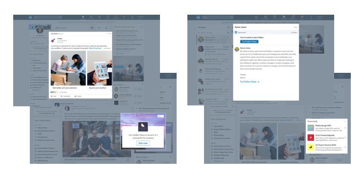

1.Choose your LinkedIn ad format
Now that you are logged in to Campaign Manager, it’s time to create and manage your ad campaigns. You can use Sponsored Content, Message Ads, Dynamic Ads, Text Ads, or a mix of all four.
Read our guide to ad formats
